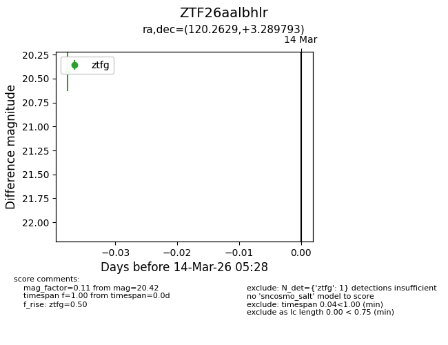
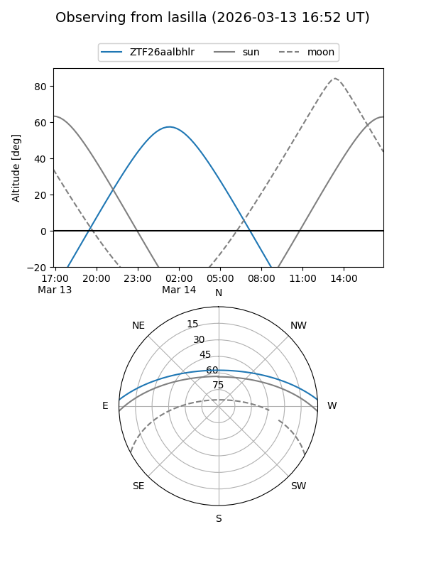
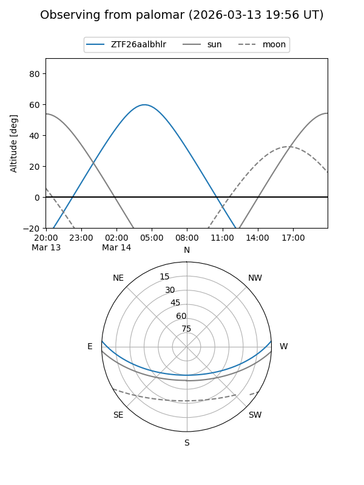

ZTF26aalbhlr
Target ZTF26aalbhlr at 2026-03-14 05:30
Aliases and brokers:
FINK: link
Lasair: link
ALeRCE: link
alt names
ZTF26aalbhlr (ztf,fink_ztf)
Coordinates:
equatorial (ra, dec) = 120.2629,+3.28979
equatorial (HMS+DMS) = 08:01:03.11,+03:17:23.25
galactic (l, b) = (218.0358,+16.97310)
Flags:
Photometry:
last ztfg=20.42
1 ztfg detections
Lightcurve

Visibility


Additional plots